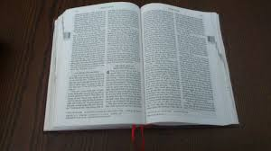

Kinh Thánh là Gì?
Một Quyển sách Lớn?
Một trong những điều đầu tiên chúng ta biết về Kinh Thánh là nó không phải là một cuốn sách duy nhấtả, nhưng một bộ sưu tập của 66 cuốn sách! Mặc dù chúng ta gọi đó sách, Kinh Thánh thực sự bao gồm những câu chuyện, lịch sử, thơ ca và các bài hát, tiểu sử và một số bức thư. (điều này có trước e-mail, nhớ không?).
Bởi vì nó có chứa rất nhiều loại văn bản khác nhau, Kinh Thánh không thường đọc từ đầu đến cuối như hầu hết những cuốn sách hiện đại (mặc dù chắc chắn có thể được). Thay vào đó, các tín hữu thường đến với Kinh Thánh để đọc đoạn văn cụ thể, như những câu chuyện về Chúa Giêsu hoặc các bài hát ca ngợi được viết về Thiên Chúa.

Để hiểu lý do tại sao Kinh Thánh gồm rất nhiều sách khác nhau, nên biết đôi chút về lịch sử của Kinh Thánh và làm thế nào nó đã được ghi lại. Thiên Chúa đã bắt đầu truyền cảm hứng cho con người ghi lại các thông điệp của Ngài cho nhân loại khoảng 3.000 năm trước (những ngày đầu có chút không rõ). Trong một khoảng thời gian khoảng 1.600 năm, ít nhất là bốn mươi nhà văn khác nhau từ các giai đoạn khác nhau của lịch sử và địa điểm khác nhau trên khắp thế giới đã ghi lại những gì Thiên Chúa đã truyền cảm hứng cho họ nói. Tuy nhiên, mặc dù có nhiều nhóm nhà văn, Kinh Thánh về cơ bản là một câu chuyện duy nhất: câu chuyện hướng con người đến với Chúa Giêsu, Ngài là thông điệp cuối cùng của Thiên Chúa cho thế giới.
Kinh Thánh có thể có vẻ giống như một cuốn sách vô cùng LỚN. Một số người nghĩ rằng hoặc họ đã nghe nói rằng Kinh Thánh thật bí ẩn hoặc khó hiểu. Họ có thể thậm chí còn được cho biết rằng chỉ có mục sư, linh mục mới có thể thật sự hiểu Kinh Thánh.
Đó là lý do tại sao nên biết Kinh Thánh THẬT SỰ là gì: Thông điệp của Thiên Chúa cho tất cả mọi người ở khắp mọi nơi, dành cho những người bình thường đọc (tất cả mọi người!).

Một Ước là Gì?
Từ "ước" có thể làm cho chúng ta nghĩ đến một di chúc ("mong muốn cuối cùng và di chúc"): một tài liệu pháp lý tuyên bố mong muốn của một người về những gì xảy ra đối với bất động sản và tài sản của họ khi họ chết. Trong Kinh Thánh, rất lâu trước khi Chúa Giêsu đến thế gian, trước tiên Thiên Chúa đã bày tỏ ý muốn của Ngài rằng mọi người nên biết và tôn thờ Ngài là Thiên Chúa DUY NHẤT chỉ của họ; đổi lại, Thiên Chúa sẽ tha thứ cho tội lỗi của con người. Phần đầu tiên của Kinh Thánh, Cựu Ước, là câu chuyện về việc con người đã phản hồi thế nào với ý muốn của Thiên Chúa.
Bởi vì con người đã KHÔNG làm theo ý muốn của Thiên Chúa, nên Thiên Chúa đưa ra một cách mới để con người được được tha thứ: gửi Chúa Giêsu, con trai duy nhất của ông, xuống thế gian để chết cho tội lỗi của con người. Những câu chuyện về Chúa Giêsu và những người đã theo Ngài là những câu chuyện của Tân Ước của Thiên Chúa, hoặc sẽ theo, dành cho nhân loại mà Ngài đã tạo ra. Và như vậy, Kinh Thánh được chia thành Cựu Ước và Tân Ước: các cuốn sách đã được viết trước khi Chúa Giêsu đến thế gian và những cuốn sách đã được viết sau đó.

Làm sao Tôi có thể Tìm một Đoạn văn trong Kinh Thánh?
Để đọc Kinh Thánh dễ dàng hơn, biết tên của các quyển sách của Kinh Thánh là rất hữu ích. Mặc dù điều đó có vẻ giống như một nhiệm vụ khó khăn, nhưng GHI NHỚ tất cả các tên theo thứ tự là hữu ích nhất. Hãy tạo một thách thức cho bản thân ghi nhớ 10 tên sách mỗi ngày. Khi bạn bắt đầu ghi nhớ tới 10 tên sách, hãy chắc chắn là bạn nhớ được tên những quyển sách trước mà bạn đã nhớ, để bạn có thể đọc thuộc lòng tất cả theo thứ tự.
Một danh sách các quyển sách của Kinh Thánh, chia thành Cựu Ước và Tân Ước, có ở trang tiếp theo. Hãy sử dụng làm hướng dẫn của bạn để ghi nhớ chúng.
Mở Kinh Thánh đến bất kỳ trang nào và bạn sẽ thấy nhiều đoạn nhỏ, mỗi đoạn có một số. Đây được gọi là các tiết đoạn. Một bộ sưu tập các tiết đoạn được gọi là một chương (và không phải tất cả các chương có cùng số lượng các tiết đoạn). Các trường hợp ngoại lệ duy nhất này là những quyển sách của Obadiah trong Cựu Ước và các quyển sách của Philêmôn, 2 và 3 Giăng (John), và Jude trong Tân Ước; các quyển sách đó không được chia thành chương..

Khi mọi người tham khảo đoạn cụ thể trong Kinh Thánh, họ sử dụng điều được gọi là "chương và tiết đoạn." Nếu ai đó muốn bạn để tìm ra câu thứ mười sáu trong chương thứ ba của cuốn sách của John, có thể bạn sẽ thấy nó được viết theo cách này: John 3:16.
Đây là điều mà việc ghi nhớ tên của các sách của Kinh Thánh có ích: bạn sẽ biết rằng John là cuốn sách thứ tư trong Tân Ước. Sau khi tìm thấy cuốn sách của John, sau đó bạn sẽ tìm kiếm các chương thứ ba, và, cuối cùng, tiết đoạn thứ mười sáu. Tất cả các tài liệu tham khảo đến các đoạn văn trong Kinh Thánh được viết như trên với John 3:16 (đôi khi tên viết tắt của cuốn sách được sử dụng). Nếu có nhiều hơn một tiết đoạn được nhắc đến, nó sẽ được viết theo cách này: Xuất Hành 20:1-17. Điều này có nghĩa là bạn sẽ tìm thấy mười bảy tiết đoạn đầu của chương thứ hai mươi của quyển sách Xuất Hành (Exodus). Rất dễ!
- Khởi đầu
- Di cư
- Leviticus
- Số
- Đệ Nhị Luật
- Joshua
- Quan tòa
- Ruth
- 1 Samuel
- 2 Samuel
- 1 Các vị Vua
- 2Các vị Vua
- 1 Sử Biên Niên
- 2 Sử Biên Niên
- Ezra
- Nehemiah
- Esther
- Việc làm
- Psalms (Thánh ca)
- Châm ngôn
- Truyền đạo
- Tập thơ Solomon
- Isaiah
- Jeremiah
- Lời than vãn
- Ezekiel
- Daniel
- Hosea
- Joel
- Amos
- Obadiah
- Jonah
- Micah
- Nahum
- Habakkuk
- Zephaniah
- Haggai
- Zechariah
- Malachi
- Matthew
- Mark
- Luke
- John
- Hành vi (Acts)
- La Mã
- 1 Người Corinth
- 2 Người Corinth
- Galati (Galatians)
- Êphêsô (Ephesians)
- Philíphê (Philippians)
- Côlôxê (Colossians)
- 1 Thessalonians
- 2 Thessalonians
- 1 Timothy
- 2 Timothy
- Titus
- Philemon
- Do Thái
- James
- 1 Peter
- 2 Peter
- 1 John
- 2 John
- 3 John
- Jude
- Sự tiết lộ